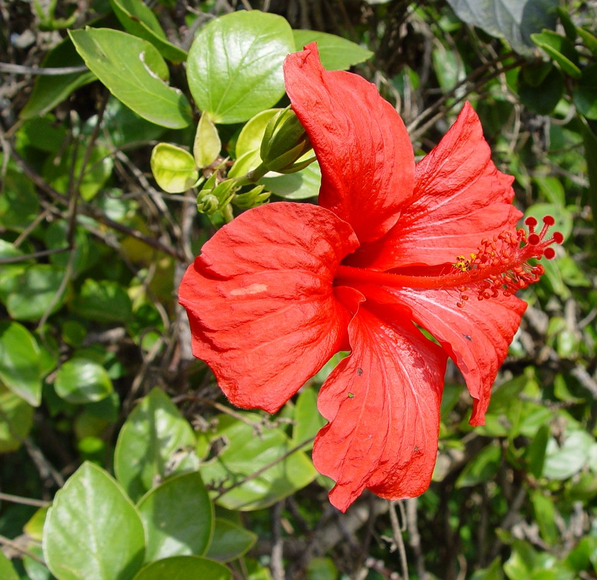

This site will include everything you need to know about me. My hopes, dreams, likes, and dislikes.
I am a highschool student who is new to using HTML code! I have completed visual design courses before and have been ceritfied in Photoshop and Illustrator. I have a brother named Jaxon and three stepbrothers, Connor, Gavin, and Michael. My hobbies include volunteering, lifeguarding, and spending time with my friends and family. After highschool, I plan on going to college to achieve my goal of starting my own physical therapy business. I believe learning to code and design websites will greatly benefit my ability to become an entreprenuer.
In my free time, I enjoy shopping, running, travelling, drinking coffee, and playing with Shih-tzu, Bella. I have two best friends named Cami and Sage who I throroughly enjoy going on these adeventures with. My life goal is to independently achieve my goals and live my life to fullest.

"What doesn't kill you makes you stronger" -Kelly Clarkson
| Favorite Store | Target | |
| Favorite Restaurant | Chipotle | |
| Favorite Color | Pink | |
| Favorite Flower | Hibiscus |  |
| Favorite College | UNC-Chapel Hill | |
| Favorite Season | Summer |
Email:mg2020@emailme.com
Phone:123-456-7890